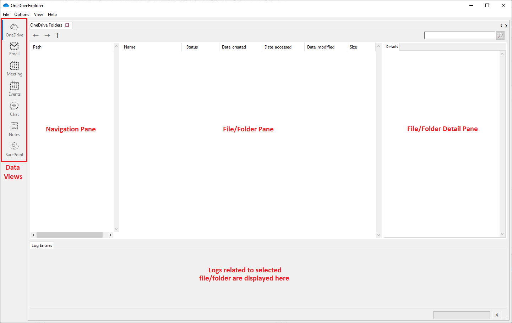
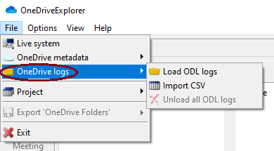

<!DOCTYPE html>
            <html>
                <head>                    
                    <meta http-equiv="X-UA-Compatible" content="IE=edge">
                    <meta http-equiv="content-type" content="text/html; charset=utf-8">
                    <title>OneDriveExplorerManual.md</title>
                    <style type="text/css">
                    body {
  font-family: Helvetica, arial, sans-serif;
  font-size: 14px;
  line-height: 1.6;
  padding-top: 10px;
  padding-bottom: 10px;
  background-color: black;
  color: white;
  padding: 30px;
}

body > *:first-child {
  margin-top: 0 !important;
}

body > *:last-child {
  margin-bottom: 0 !important;
}

a {
  color: #4183C4;
}

a.absent {
  color: #cc0000;
}

a.anchor {
  display: block;
  padding-left: 30px;
  margin-left: -30px;
  cursor: pointer;
  position: absolute;
  top: 0;
  left: 0;
  bottom: 0;
}

h1, h2, h3, h4, h5, h6 {
  margin: 20px 0 10px;
  padding: 0;
  font-weight: bold;
  -webkit-font-smoothing: antialiased;
  cursor: text;
  position: relative;
}

h1:hover a.anchor, h2:hover a.anchor, h3:hover a.anchor, h4:hover a.anchor, h5:hover a.anchor, h6:hover a.anchor {
  background: url("../../images/modules/styleguide/para.png") no-repeat 10px center;
  text-decoration: none;
}

h1 tt, h1 code {
  font-size: inherit;
}

h2 tt, h2 code {
  font-size: inherit;
}

h3 tt, h3 code {
  font-size: inherit;
}

h4 tt, h4 code {
  font-size: inherit;
}

h5 tt, h5 code {
  font-size: inherit;
}

h6 tt, h6 code {
  font-size: inherit;
}

h1 {
  font-size: 28px;
  border-bottom: 2px solid #878787;
  color: white;
}

h2 {
  font-size: 24px;
  border-bottom: 1px solid #878787;
  color: white;
}

h3 {
  font-size: 18px;
}

h4 {
  font-size: 16px;
}

h5 {
  font-size: 14px;
}

h6 {
  color: #777777;
  font-size: 14px;
}

p, blockquote, ul, ol, dl, table, pre {
  margin: 15px 15px;
}

hr {
  background: transparent url("../../images/modules/pulls/dirty-shade.png") repeat-x 0 0;
  border: 0 none;
  color: #878787;
  height: 4px;
  padding: 0;
}

body > h2:first-child {
  margin-top: 0;
  padding-top: 0;
}

body > h1:first-child {
  margin-top: 0;
  padding-top: 0;
}

body > h1:first-child + h2 {
    margin-top: 0;
    padding-top: 0;
}
body > h3:first-child, body > h4:first-child, body > h5:first-child, body > h6:first-child {
  margin-top: 0;
  padding-top: 0;
}

a:first-child h1, a:first-child h2, a:first-child h3, a:first-child h4, a:first-child h5, a:first-child h6 {
  margin-top: 0;
  padding-top: 0;
}

h1 p, h2 p, h3 p, h4 p, h5 p, h6 p {
  margin-top: 0;
}

li p.first {
  display: inline-block;
}

li.task-list-item {
  list-style-type: none;
}

ul, ol {
  padding-left: 30px;
}

ul :first-child, ol :first-child {
  margin-top: 0;
}

ul :last-child, ol :last-child {
  margin-top: 0;
  margin-bottom: 0;
}

dl {
  padding: 0;
}

dl dt {
  font-size: 14px;
  font-weight: bold;
  font-style: italic;
  padding: 0;
  margin: 15px 0 5px;
}

dl dt:first-child {
  padding: 0;
}

dl dt > :first-child {
  margin-top: 0;
}

dl dt > :last-child {
  margin-bottom: 0;
}

dl dd {
  margin: 0 0 15px;
  padding: 0 15px;
}

dl dd > :first-child {
  margin-top: 0;
}

dl dd > :last-child {
      margin-bottom: 0;
}

blockquote {
  border-left: 4px solid #dddddd;
  padding: 0 15px;
  color: #777777;
}

blockquote > :first-child {
  margin-top: 0;
}

blockquote > :last-child {
  margin-bottom: 15px;
}

table {
  width:100%;
  padding: 0;
}

table tr {
  border-top: 1px solid #878787;
  background-color: white;
  color: black;
  margin: 0;
  padding: 0;
}

table tr:nth-child(2n) {
  background-color: #a4a4a4;
}

table tr th {
  font-weight: bold;
  background-color: white;
  border: 1px solid #878787;
  margin: 0;
  padding: 6px 13px;
}

table tr td {
  border: 1px solid #878787;
  background-color: #a4a4a4;
  margin: 0;
  padding: 6px 13px;
}

table tr th :first-child, table tr td :first-child {
  margin-top: 0;
}

table tr th :last-child, table tr td :last-child {
  margin-bottom: 0;
}

img {
  max-width: 100%;
}

span.frame {
  display: block;
  overflow: hidden;
}

span.frame > span {
  border: 1px solid #dddddd;
  display: block;
  float: left;
  overflow: hidden;
  margin: 13px 0 0;
  padding: 7px;
  width: auto;
}

span.frame span img {
  display: block;
  float: left;
}

span.frame span span {
  clear: both;
  color: #333333;
  display: block;
  padding: 5px 0 0;
}

span.align-center {
  display: block;
  overflow: hidden;
  clear: both;
}

span.align-center > span {
  display: block;
  overflow: hidden;
  margin: 13px auto 0;
  text-align: center;
}

span.align-center span img {
  margin: 0 auto;
  text-align: center;
}

span.align-right {
  display: block;
  overflow: hidden;
  clear: both;
}

span.align-right > span {
  display: block;
  overflow: hidden;
  margin: 13px 0 0;
  text-align: right;
}

span.align-right span img {
  margin: 0;
  text-align: right;
}

span.float-left {
  display: block;
  margin-right: 13px;
  overflow: hidden;
  float: left;
}

span.float-left span {
  margin: 13px 0 0;
}

span.float-right {
  display: block;
  margin-left: 13px;
  overflow: hidden;
  float: right;
}

span.float-right > span {
  display: block;
  overflow: hidden;
  margin: 13px auto 0;
  text-align: right;
}

code, tt {
  margin: 0 2px;
  padding: 0 5px;
  white-space: nowrap;
  border: 1px solid #9a9a9a;
  background-color: #a4a4a4;
  border-radius: 3px;
}

pre code {
  margin: 0;
  padding: 0;
  white-space: pre;
  border: none;
  background: transparent;
}

.highlight pre {
  background-color: #a4a4a4;
  border: 1px solid #878787;
  font-size: 13px;
  line-height: 19px;
  overflow: auto;
  padding: 6px 10px;
  border-radius: 3px;
}

pre {
  display: inline-block;
  background-color: #a4a4a4;
  border: 1px solid #878787;
  font-size: 13px;
  line-height: 19px;
  overflow: auto;
  padding: 6px 10px;
  border-radius: 3px;
}

div {
    display: inline;
}

.column {
  float: left;
  padding: 6px 20px;
}

/* Clear floats after the columns */
.row:after {
  content: "";
  display: table;
  clear: both;
}

legend {
  color:white;
}

/* Syntax Highlighting */

.plainText {
 background-color: #FFFFFF;
 color: #000000;
}
.htmlServerSideScript {
 background-color: #FFFF00;
}
.htmlComment {
 color: #307F30;
}
.htmlTagDelimiter {
 color: #7F7FFF;
}
.htmlElementName {
 color: #CC6C4E;
}
.htmlAttributeName {
 color: #FF0000;
}
.htmlAttributeValue {
 color: #7F7FFF;
}
.htmlOperator {
 color: #7F7FFF;
}
.comment {
 color: #307F30;
}
.xmlDocTag {
 color: #808080;
}
.xmlDocComment {
 color: #307F30;
}
.string {
 color: #CC6C4E;
}
.stringCSharpVerbatim {
 color: #CC6C4E;
}
.keyword {
 color: #7F7FFF;
}
.preprocessorKeyword {
 color: #7F7FFF;
}
.htmlEntity {
 color: #FF0000;
}
.xmlAttribute {
 color: #E30000;
}
.xmlAttributeQuotes {
 color: #000000;
}
.xmlAttributeValue {
 color: #7F7FFF;
}
.xmlCDataSection {
 color: #808080;
}
.xmlComment {
 color: #307F30;
}
.xmlDelimiter {
 color: #7F7FFF;
}
.xmlName {
 color: #CC6C4E;
}
.className {
 color: #48D1CC;
}
.cssSelector {
 color: #CC6C4E;
}
.cssPropertyName {
 color: #FF0000;
}
.cssPropertyValue {
 color: #7F7FFF;
}
.sqlSystemFunction {
 color: #FF00FF;
}
.powershellAttribute {
 color: #B0E0E6;
}
.powershellOperator {
 color: #808080;
}
.powershellType {
 color: #008080;
}
.powershellVariable {
 color: #E30000;
}
.type {
 color: #008080;
}
.typeVariable {
 color: #008080;
 font-style: italic;
}
.namespace {
 color: #000080;
}
.constructor {
 color: #800080;
}
.predefined {
 color: #000080;
}
.pseudoKeyword {
 color: #000080;
}
.stringEscape {
 color: #808080;
}
.controlKeyword {
 color: #7F7FFF;
}
.number {
}
.operator {
}
.delimiter {
}
.markdownHeader {
 font-weight: bold;
}
.markdownCode {
 color: #008080;
}
.markdownListItem {
 font-weight: bold;
}
.italic {
 font-style: italic;
}
.bold {
 font-weight: bold;
}

<style>
    .dataSources {
        width: 10%;
        text-align: center;
    }
    .dataSources th {
        background: #010001;
        color: white;
        word-wrap: break-word;
        text-align: center;
    }
    .dataSources tr:nth-child(2) td {
        background: #ffe9a0;
        text-align: center;
    }
    .dataSources tr:nth-child(3) td {
        background: #85be1e;
    }
    .dataSources tr:nth-child(4) td {
        background: #eaf5d3;
    }
    .dataSources tr:nth-child(5) td {
        background: #db701a;
    }
    .dataSources tr:nth-child(6) td {
        background: #fde5d3;
    }
</style>
                    </style>
                </head>
                <body style="">
                <h1 id="0">OneDriveExplorer</h1>
<p id="2"></p>
<p id="4"><strong>Revision history</strong><br />
2022-11-08 Rev. 1 - Initial Release<br />
2022-12-07 Rev. 2 - Updated for v2022.12.08<br />
2023-03-10 Rev. 3 - Updated for v2023.03.10<br />
2023-05-05 Rev. 4 - Updated for v2023.05.05<br />
2023-09-07 Rev. 5 - Updated for v2023.09.07<br />
2023-12-13 Rev. 6 - Updated for v2023.12.13<br />
2024-10-31 Rev. 7 - Updated for v2024.11.01
2025-05-13 Rev. 8 - Updated for v2025.05.13</p>
<h2 id="14">OneDriveExplorer GUI Introduction</h2>
<p id="15">OneDriveExplorer GUI is used to view the contents of &lt;UserCid&gt;.dat files. It can load multiple settings, logs, and $Recycle.bin files at once. Search across all settings files, view OneDrive logs and much more.</p>
<h2 id="16">Getting Started</h2>
<p id="17">After starting OneDriveExplorer, the OneDrive data view is displayed.</p>
<p id="19"></p>
<p id="21">Settings for themes, fonts, logs, output to csv, json, html are saved and reloaded between program executions. You can reset these options by deleting the ode.settings file.</p>
<h3 id="23">OneDrive Data View sections</h3>
<p id="24">There are five sections to the main interface.</p>
<h4 id="26">Navigation Pane</h4>
<p id="27">On the left-hand side of the window is the navigation pane. This pane displays the &lt;UserCid&gt;.dat and SQLite files that have been loaded and the folder structure of OneDrive. Once a &lt;UserCid&gt;.dat and/or SQLite file has been loaded and a folder has been selected, a context menu is available by right clicking on the folder. Context menu options will be discussed later.</p>
<h4 id="29">File/Folder Pane</h4>
<p id="30">The file/folder pane shows the contents of the folder selected in the navigation pane along with it's OneDrive status. Once a file/folder has been loaded and a folder has been selected, a context menu is available by right clicking on the file/folder. Context menu options will be discussed later.</p>
<h5 id="32">Status</h5>
<p id="33">File folder status is a s follows:<br />
</p>
<p id="36"><span style="color:red">*Note: Not Synced and Not Linked do not exist on the endpoint. These are artifacts of syncing and linking libraries.</span></p>
<h4 id="38">Details</h4>
<p id="39">The Details pane shows detailed information about the folder/file selected. Information includes name, type, path, parentid, driveitemid, etag, and number of children.</p>
<h4 id="41">Log Entries</h4>
<p id="42">The Log Entries pane shows related logs to the folder/file selected. This will only be populated if the OneDrive logs are parsed along with the &lt;UserCid&gt;.dat/SQLite file. This will be discussed in more detail.</p>
<h4 id="44">Status bar</h4>
<p id="45">Across the bottom of the interface is a status bar as seen below.</p>
<p id="47"></p>
<p id="49">The status bar contains a progress bar for the current running job and the total number of messages available on the Message form.<br />
Double clicking on the Total messages counter will show the Messages form. I there are any errors in the Messages form, the background will be yellow. If there are any errors, the background will be red. When the Messages form is viewed, the background will change back to the default color.</p>
<h3 id="52">Main Menu</h3>
<p id="53">The main menu contains options for loading &lt;UserCid&gt;.dat files, preferences, themes, etc. Many of the menu items have shortcut keys. Pressing the keys shown by a menu item will activate the menu item.<br />
The next sections below will detail the submenus.</p>
<h4 id="56">File</h4>
<p id="57">The File menu contains options for loading OneDrive settings files and exporting.</p>
<p id="59"></p>
<ul id="61">
<li id="61">Live system: Preforms a scan of the live system and loads any OneDrive information found. *Must be run as Administrator.</li>
<li id="62">OneDrive settings: Allows for loading/unloading OneDrive settings files. OneDrive settings will be discussed below.</li>
<li id="63">OneDrive logs: Allows for loading/unloading OneDrive ODL logs.</li>
<li id="64">Project: Allows for loading/saving of projects. Projects will be discussed below.</li>
<li id="65">Export 'OneDrive Folders': Exports what is shown in the OneDrive Folders tab.<br />
As an example, if the OneDrive Folders tab looks like this:</li>
</ul>
<p id="68"></p>
<p id="70">Exporting to PDF would generate a PDF file that contains the following:</p>
<p id="72"></p>
<p id="74">This can be useful for adding to reports or other documentation.</p>
<h4 id="76">Options</h4>
<p id="77">The Options menu contains items for the look and feel and preferences of OneDriveExplorer.</p>
<p id="79"></p>
<ul id="81">
<li id="81">Font: Change the font type, style, and size. Applies to the Details, Log entries, and Log tabs.</li>
<li id="82">Skins: Change the overall look of OneDriveExplorer.</li>
<li id="83">Sync with Github: Downloads the latest Cstructs from <a href="https://github.com/Beercow/ODEFiles">https://github.com/Beercow/ODEFiles</a></li>
<li id="84">Preferences: Program options such as auto save, disabling the user hive dialog, and ODL settings.</li>
</ul>
<p id="86">The Preferences dialog allows you to change various OneDriveExplorer settings as seen below.</p>
<p id="88"></p>
<h4 id="90">View</h4>
<p id="91">The View menu contains two options: Messages and CStructs.</p>
<p id="93"></p>
<h5 id="95">Messages</h5>
<p id="96">Messages toggles the visibility of the Messages window. The messages window displays status messages on the parsing process. The total number of messages is also shown on the main window's bottom status bar to the far right. Double clicking the message count will also show the Messages window.</p>
<p id="98"></p>
<p id="100">As mentioned above, the background of the messages count will be yellow if a warning message exists and red if an error message exists. The background will return to default when the Messages window is shown.<br />
The Messages window contains two options. One for clearing the messages and the other to export the messages. Exporting the messages can be useful for troubleshooting the application.</p>
<p id="103"></p>
<h5 id="105">CStructs</h5>
<p id="106">The CStructs option displays a list of available cstructs for a given code file. Details include author, functions, and description. CStructs will be discussed in more detail in a dedicated section of this manual.</p>
<h4 id="108">Help</h4>
<p id="109">The help menu contains two options: Quick help and About.</p>
<h2 id="111">Using OneDriveExplorer</h2>
<h3 id="112">Loading data</h3>
<p id="113">Loading data in OneDriveExplorer can happen in multiple ways. This includes Live system, &lt;UserCid&gt;.dat files, ODL logs, output from command line runs, projects, etc. The following sections will walk through loading data in OneDriveExplorer.</p>
<h4 id="115">Live system</h4>
<p id="116">*Note: OneDriveExplorer must be run as an administrator of this option to be enabled.<br />
Live system scans the current system looking for &lt;UserCid&gt;.dat/SQLite, NTUSER.dat, $Recycle.Bin, and OneDrive logs (if log parsing is enabled). Information will be parsed and loaded into OneDriveExplorer.</p>
<p id="119"></p>
<h4 id="121">OneDrive metadata</h4>
<p id="122">OneDrive metadat contains three options for loading a user's profile, individual files, or saved data from OneDriveExplorer.</p>
<p id="124"></p>
<h5 id="126">Profile</h5>
<p id="127">Use this option to load a user's OneDrive profile. Default location is <em>%USERPROFILE%\%AppData%\Local\Microsoft\OneDrive\</em>. Once the folder is selected, OneDriveExplorer will prompt to load a User Hive and the $Recycle.Bin folder.</p>
<p id="129"></p>
<p id="131"></p>
<p id="133">You can bypass these dialogs in one of two ways:</p>
<ul id="134">
<li id="134">Holding down SHIFT when loading &lt;UserCid&gt;.dat</li>
<li id="135">In the Preferences dialog</li>
</ul>
<p id="137"></p>
<h5 id="139">Load Individual Files</h5>
<p id="140">Use this option to loose or individual OneDrive metadata files. When selected, OneDriveExplorer will present options for metadata files to load.</p>
<p id="142"></p>
<p id="144">Default location for metadata files:<br />
<strong>&lt;userCid&gt;.dat</strong>: <em>%USERPROFILE%\%AppData%\Local\Microsoft\OneDrive\settings\&lt;Personal\Business[1-9]&gt;</em><br />
<strong>SyncEngineDatabase.db</strong>: <em>%USERPROFILE%\%AppData%\Local\Microsoft\OneDrive\settings\&lt;Personal\Business[1-2]&gt;</em><br />
<strong>SafeDelete.db</strong>: <em>%USERPROFILE%\%AppData%\Local\Microsoft\OneDrive\settings\&lt;Personal\Business[1-9]&gt;</em><br />
<strong>Microsoft.ListSync.db</strong>: <em>%USERPROFILE%\%AppData%\Local\Microsoft\OneDrive\ListSync\Business1[1-9]\settings\&lt;Personal\Business[1-9]&gt;</em><br />
<strong>Microsoft.FileUsageSync.db</strong>: <em>%USERPROFILE%\%AppData%\Local\Microsoft\OneDrive\ListSync\Business1[1-9]\settings\&lt;Personal\Business[1-9]&gt;</em><br />
<strong>NTUSER.DAT</strong>: <em>%USERPROFILE%</em><br />
<strong>$Recycle.Bin</strong>: <em>%SystemDrive%</em></p>
<h5 id="153">Import Saved data</h5>
<p id="154">Import Saved Data has two options. Import JSON and Import CSV.</p>
<p id="156"></p>
<h6 id="158">Import JSON</h6>
<p id="159">Import JSON allows for loading a previously saved JSON file from the command line or GUI application.</p>
<h6 id="161">Import CSV</h6>
<p id="162">Import CSV allows for loading a previously saved CSV file from the command line or GUI application.</p>
<p id="164"></p>
<h4 id="166">OneDrive logs</h4>
<p id="167">*Note: This option is only available if enabled in the Preferences dialog.<br />
OneDrive logs contains two options for loading ODL data: Load ODL logs and Import csv. OneDrive logs will be discussed later.</p>
<p id="170"></p>
<h5 id="172">Load ODL logs</h5>
<p id="173">Use this option to load OneDrive log files. The default location is <em>%USERPROFILE%\%AppData%\Local\Microsoft\OneDrive\logs\&lt;Personal\Business&gt;</em>. If the <em>ObfuscationStringMap.txt</em> or <em>general.keystor</em> file is found, it will be used to automatically deobfuscate the logs.</p>
<h5 id="175">Import CSV</h5>
<p id="176">Import CSV allows for loading a previously saved CSV file from the command line or GUI application.</p>
<h4 id="178">Projects</h4>
<p id="179">Projects allow you to load one or more &lt;UserCid&gt;.dat and log files; save the currently loaded &lt;UserCid&gt;.dat and log files. This allows for quickly loading the same &lt;UserCid&gt;.dat and log files for a particular case versus loading the files individually. Projects are saved with a <em>.ode_proj</em> extension.</p>
<h3 id="181">Selecting columns</h3>
<p id="182">Columns can be added or removed by right clicking the column header in the file/folder pane. Columns that can be selected include Date Created, Date Accessed, Date Modified, and Size. The version of ONeDrive determines if this data will be available.</p>
<p id="184"></p>
<h3 id="186">Selecting Folders/Files</h3>
<p id="187">Selecting Folders/Files in OneDriveExplorer works much the same as it does in Windows Explorer. Clicking the small arrow to the left of the folder or double clicking the folder will expand that folder.</p>
<h3 id="189">Finding Folders/Files</h3>
<p id="190">The top of the OneDrive Folders tab contains a simple entry box to enter text to find. If the text is found, the Folders/Files will be populated in the middle pane.</p>
<p id="192"></p>
<h3 id="194">Folders/Files context menu</h3>
<p id="195">The context menu changes dynamically depending on what you right click on. Most common functions are copy Name, Path, Details, or Log Entries. Folder entries allow for expanding and collapsing the tree structure. Top level entries have the option to unload the entire OneDrive folder structure.</p>
<p id="197"></p>
<h3 id="199">File/Folder Details Pane</h3>
<p id="200">When a Folder/File is selected, the Details pane is populated with various data about the selection. There can be up to four tabs with different information about the file/folder.</p>
<p id="202"></p>
<p id="204"><strong><u>These include:</u></strong></p>
<ul id="205">
<li id="205"><strong>Details</strong>: Basic details for the file/folder
<ul id="206">
<li id="206">Name: Name of the Folder/File</li>
<li id="207">Path: Full path to Folder/File</li>
<li id="208">Size: Size of file</li>
<li id="209">Hash: Hash of file
<ul id="210">
<li id="210">SHA1</li>
<li id="211">quickXor</li>
</ul>
</li>
<li id="212">parentResourceID: Specifies the identifier of the parent item</li>
<li id="213">resourceID: Represents a file/folder stored in OneDrive</li>
<li id="214">eTag: ETag for the entire item (metadata + content)<br />
<br></li>
</ul>
</li>
<li id="216"><strong>Metadata</strong>: Additional metadata about the file if available
<ul id="217">
<li id="217">resourceID: Represents a file/folder stored in OneDrive</li>
<li id="218">fileName: Name of file</li>
<li id="219">spoCompositeID: A unique ID that is a composite of the following values:
<ul id="220">
<li id="220">siteID</li>
<li id="221">webID</li>
<li id="222">listID</li>
</ul>
</li>
<li id="223">createdBy: User that created the file</li>
<li id="224">modified by: Last user to modify file</li>
<li id="225">fileExtension: The extension of the file</li>
<li id="226">lastWriteCount: Number indicating order files were written to<br />
<br></li>
</ul>
</li>
<li id="228"><strong>MetadataJSON</strong>: Contains information related to image, audio, and video files<br />
<br></li>
<li id="230"><strong>filePolicies</strong>: Contains information about the policies applied to the file in OneDrive</li>
</ul>
<h3 id="232">OneDrive Logs</h3>
<p id="233">OneDrive logs are stored as binary files with extensions .odl, .odlgz, .odlsent and .aold usually found in the following location: <em>%USERPROFILE%\%AppData%\Local\Microsoft\OneDrive\logs\&lt;Personal\Business&gt;</em>. When loaded, new tabs will be populated with the logs for each user next to the OneDrive Folders tab.</p>
<p id="235"></p>
<p id="237">Selecting one of these tabs will bring up the logs for that user. From the log tab, you can sort columns and pop out individual cells.<br />
From the OneDrive Folders tab, selecting a file/folder will populate the Log Entries tab with some, not all, of the logs associated with the file/folder. This can be useful to see what activities have taken place on the file/folder.</p>
<p id="240"></p>
<h3 id="242">Email Data View sections</h3>
<p id="243">There are three sections to the Email data view.</p>
<p id="245"></p>
<h4 id="247">Email List</h4>
<p id="248">List of emails and dates that are contained in the OneDrive metadata.</p>
<h4 id="250">Email Information</h4>
<p id="251">Information on the selected email such as: Subject, ConversationId, From, To, Date, and File Name.</p>
<h4 id="253">File data</h4>
<p id="254">This section contains information on the file being shared in the email.</p>
<h3 id="256">Meeting Data View sections</h3>
<p id="257">There are four sections to the Meeting data view.</p>
<p id="259"></p>
<h4 id="261">Meeting List</h4>
<p id="262">List of meetings that are contained in the OneDrive metadata.</p>
<h4 id="264">Meeting Information</h4>
<p id="265">Information on the selected meeting such as: Title, ICalUid, ConversationId, MeetingStartTime, isRecurring, File Name, File Share Data.</p>
<h4 id="267">File data</h4>
<p id="268">This section contains information on the file being shared in the meeting.</p>
<h4 id="270">Participant List</h4>
<p id="271">List of participants in the meeting.</p>
<h3 id="273">Event Data View sections</h3>
<p id="274">There are four sections to the Event data view.</p>
<p id="276"></p>
<h4 id="278">Event List</h4>
<p id="279">List of events that are contained in the OneDrive metadata.</p>
<h4 id="281">Event Information</h4>
<p id="282">Information on the selected event such as: Title, ICalUid, ConversationId, MeetingStartTime, isRecurring, File Name, File Share Data.</p>
<h4 id="284">File data</h4>
<p id="285">This section contains information on the file being shared in the event.</p>
<h4 id="287">Participant List</h4>
<p id="288">List of participants in the event.</p>
<h3 id="290">Chat Data View sections</h3>
<p id="291">There are three sections to the Chat data view.</p>
<p id="293"></p>
<h4 id="295">Chat List</h4>
<p id="296">List of Teams chats that are contained in the OneDrive metadata.</p>
<h4 id="298">File data</h4>
<p id="299">This section contains information on the file being shared in the Teams chat.</p>
<h4 id="301">Participant List</h4>
<p id="302">List of participants in the Teams Chat.</p>
<h3 id="304">Note Data View sections</h3>
<p id="305">There are three sections to the Note data view. These are Teams chats that are with the user only.</p>
<p id="307"></p>
<h4 id="309">Note List</h4>
<p id="310">List of Teams chats that are contained in the OneDrive metadata.</p>
<h4 id="312">File data</h4>
<p id="313">This section contains information on the file being shared in the Teams chat.</p>
<h4 id="315">Participant List</h4>
<p id="316">List of participants in the Teams Chat.</p>
<h3 id="318">SharePoint Data View sections</h3>
<p id="319">There are three sections to the SharePoint data view. These are Teams chats that are with the user only.</p>
<p id="321"></p>
<h4 id="323">SharePoint List</h4>
<p id="324">List of SharePoint sites that are contained in the OneDrive metadata.</p>
<h4 id="326">SharePoint Shared files</h4>
<p id="327">List of files shared with the user from SharePoint.</p>
<h4 id="329">File data</h4>
<p id="330">This section contains information on the file being shared from SharePoint.</p>
<h3 id="332">CStructs</h3>
<p id="333">cstruct files provide a means to better parse ODL entries. The parameters of ODL entries consist of structured binary data and are parsed with a regex looking for ascii characters. cstruct files give us a means to define the structured data and extract it accordingly.</p>
<p id="335">CStructs live under the main OneDriveExplorer directory in a subdirectory called 'cstructs'. If you would like to load cstruct files from a different directory, use the --cstructs switch when starting OneDriveExplorer</p>
<blockquote id="337">
<p id="337">OneDriveExplorer.exe --cstructs &lt;folder_path&gt;</p>
</blockquote>
<p id="339">When OneDriveExplorer is started, it looks for all files matching that pattern in the cstructs folder. It then verifies that each file found is a valid cstruct file. IF it is, the cstruct is made available to OneDriveExplorer.</p>
<p id="341">To view all available cstructs, use the View | CStructs menu option. When this is selected the following dialog is displayed:</p>
<p id="343"></p>
<p id="345">To get additional details about the cstruct, click the Add'l Info button. The following dialog will be displayed:</p>
<p id="347"></p>
<h1 id="349">OneDriveExplorer</h1>
<h2 id="350">OneDriveExplorer Introduction</h2>
<p id="351">OneDriveExplorer is a tool used to parse &lt;UserCid&gt;.dat files and reconstruct the folder structure of OneDrive. &lt;UserCid&gt;.dat files are commonly found at %USERPROFILE%\%AppData%\Local\Microsoft\OneDrive\settings\&lt;Personal\Business&gt;</p>
<h2 id="353">Getting started</h2>
<p id="355">Running OneDriveExplorer.exe without any arguments displays a list of command line options:</p>
<pre><code id="357">usage: OneDriveExplorer.py [-h] [--LIVE LIVE] [--PROFILE PROFILE] [--SETTINGS_DAT SETTINGS_DAT]
                           [--SYNC_ENGINE SYNC_ENGINE] [--SAFE_DEL SAFE_DEL] [--LIST_SYNC LIST_SYNC]
                           [--FILE_USAGE_SYNC FILE_USAGE_SYNC] [--REG_HIVE REG_HIVE] [--RECYCLE_BIN RECYCLE_BIN]
                           [--LOGS [LOGS]] [--output-dir OUTPUT_DIR] [--csv] [--html] [--json] [--pretty] [--clist]
                           [--cstructs CSTRUCTS] [--sync] [--debug] [--guids]

options:
  -h, --help            show this help message and exit
  --LIVE LIVE           Directory to recursively process, looking for &lt;UserCid&gt;.dat, NTUSER hive, $Recycle.Bin, and
                        ODL logs. This mode is primarily used with KAPE.
  --PROFILE PROFILE     Profile folder to process. Default location: %APPDATALOCAL%\Microsoft\OneDrive
  --SETTINGS_DAT SETTINGS_DAT
                        &lt;UserCid&gt;.dat file to be parsed
  --SYNC_ENGINE SYNC_ENGINE
                        SyncEngineDatabase.db file to load.
  --SAFE_DEL SAFE_DEL   SafeDelete.db file to load.
  --LIST_SYNC LIST_SYNC
                        Microsoft.ListSync.db file to load.
  --FILE_USAGE_SYNC FILE_USAGE_SYNC
                        Microsoft.FileUsageSync.db file to load.
  --REG_HIVE REG_HIVE   If a registry hive is provided then the mount points of the SyncEngines will be resolved.
  --RECYCLE_BIN RECYCLE_BIN
                        $Recycle.Bin folder to load.
  --LOGS [LOGS]         Directory to recursively process for ODL logs.
  --output-dir OUTPUT_DIR
                        Directory to save results to. Be sure to include the full path in double quotes.
  --csv                 Save CSV formatted results.
  --html                Save html formatted results.
  --json                Save json formatted results. Use --pretty for a more human readable layout.
  --pretty              When exporting to json, use a more human readable layout. Default is FALSE
  --clist               List available cstructs. Defaults to 'cstructs' folder where program was executed. Use
                        --cstructs for different cstruct folder.
  --cstructs CSTRUCTS   The path where ODL cstructs are located. Defaults to 'cstructs' folder where program was
                        executed.
  --sync                If true, OneDriveExplorer will download the latest Cstrucs from
                        https://github.com/Beercow/ODEFiles prior to running. Default is FALSE
  --debug               Show debug information during processing.
  --guids               OneDriveExplorer will generate 10 GUIDs and exit. Useful when creating new Cstructs. Default
                        is FALSE
</code></pre>
<p id="399">There are several groups of command line options for OneDriveExplorer.</p>
<h3 id="401">Source</h3>
<ul id="403">
<li id="403"><p id="403"><strong>--LIVE</strong>: Directory to recursively process, looking for <UserCid>.dat, NTUSER hive, $Recycle.Bin, and ODL logs. This mode is primarily used with KAPE.</p>
</li>
<li id="405"><p id="405"><strong>--PROFILE</strong>: Profile folder to process.</p>
</li>
<li id="407"><p id="407"><strong>--SETTINGS_DAT</strong>: Full path, including &lt;UserCid&gt;.dat, of &lt;UserCid&gt;.dat file to be parse</p>
</li>
<li id="409"><p id="409"><strong>--SYNC_ENGINE</strong>: Full path, including SyncEngineDatabase.db, of SyncEngineDatabase.db file to be parse</p>
</li>
<li id="411"><p id="411"><strong>--SAFE_DEL</strong>: Full path, including SafeDelete.db, of SafeDelete.db file to be parse</p>
</li>
<li id="413"><p id="413"><strong>--LIST_SYNC</strong>: Full path, including Microsoft.ListSync.db, of Microsoft.ListSync.db file to be parse</p>
</li>
<li id="415"><p id="415"><strong>--FILE_USAGE_SYNC</strong>: Full path, including Microsoft.FileUsageSync.db, of .db file to be parse</p>
</li>
<li id="417"><p id="417"><strong>--REG_HIVE</strong>: This switch will instruct OneDriveExplorer to use the registry hive supplied to resolve OneDrive mount points.</p>
</li>
<li id="419"><p id="419"><strong>--RECYCLE_BIN</strong>: This switch will instruct OneDriveExplorer to use the $Recycle.Bin supplied to look for deleted files. This switch can only be used when a registry hive is supplied.</p>
</li>
<li id="421"><p id="421"><strong>--LOGS</strong>: Directory to recursively process for ODL logs.</p>
</li>
</ul>
<h3 id="423">Output</h3>
<ul id="425">
<li id="425"><p id="425"><strong>--csv</strong>: Directory to save CSV formatted results to. Be sure to include the full path in double quotes.</p>
</li>
<li id="427"><p id="427"><strong>--csvf</strong>: File name to save CSV formatted results to. When present, overrides default name</p>
</li>
<li id="429"><p id="429"><strong>--html</strong>: Directory to save html formatted results to. Be sure to include the full path in double quotes.</p>
</li>
<li id="431"><p id="431"><strong>--json</strong>: Directory to save json representation to. Use --pretty for a more human readable layout.</p>
</li>
<li id="433"><p id="433"><strong>--pretty</strong>: When exporting to json, use a more human readable layout. Default is FALSE</p>
</li>
</ul>
<h3 id="435">Other</h3>
<ul id="437">
<li id="437"><p id="437"><strong>--clist</strong>: List available cstructs. Also used to check for errors in cstruct files.</p>
</li>
<li id="439"><p id="439"><strong>--cstructs</strong>: The path where ODL cstructs are located. Defaults to 'cstructs' folder where program was executed.</p>
</li>
<li id="441"><p id="441"><strong>--sync</strong>: Downloads the latest Cstructs from <a href="https://github.com/Beercow/ODEFiles">https://github.com/Beercow/ODEFiles</a></p>
</li>
<li id="443"><p id="443"><strong>--debug</strong>: Show debug information during processing.</p>
</li>
<li id="445"><p id="445"><strong>--guids</strong>: Generates 10 random GUIDs for use with cstruct files.</p>
</li>
</ul>
<h3 id="447">Usage</h3>
<p id="448">To use OneDriveExplorer, simply provide the profile path to the <code>--PROFILE</code> argument</p>
<div id="450" class="lang-bash editor-colors"><div class="text"><pre>
OneDriveExplorer.py --PROFILE %APPDATALOCAL%\Microsoft\OneDrive
</pre></div>
</div>
<p id="454">Depending on the options, OneDriveExplorer can produce JSON, CSV, or HTML files of the parsed data. The <code>--pretty</code> option can be used to output the JSON into a more human readable layout.</p>
<p id="456">A user registry hive can be supplied with the <code>--REG_HIVE</code> argument. This will resolve some of the mount points associated with OneDrive. Along with the registry hive, $Recycle.Bin can be added with the <code>--RECYCLE_BIN</code> option to look for deleted files.</p>
<h1 id="458">Version changes</h1>
<h2 id="459">v2025.05.13</h2>
<h3 id="460">Added</h3>
<h4 id="461">GUI</h4>
<ul id="462">
<li id="462">Ability to add, parse, and individual files</li>
<li id="463">Data Views
<ul id="464">
<li id="464">OneDrive</li>
<li id="465">Email</li>
<li id="466">Meeting</li>
<li id="467">Events</li>
<li id="468">Teams Chat</li>
<li id="469">Notes</li>
<li id="470">SharePoint</li>
</ul>
</li>
</ul>
<h4 id="471">GUI/commandline</h4>
<ul id="472">
<li id="472">Microsoft.FileUsageSync.db (recent_files_formatted_spo)</li>
<li id="473">Profile option (no need to input individual files)</li>
<li id="474">Unmanaged exception handling</li>
</ul>
<h4 id="475">commandline</h4>
<ul id="476">
<li id="476">command line options have changed (see -h)</li>
</ul>
<h3 id="477">Fixed</h3>
<h4 id="478">GUI</h4>
<ul id="479">
<li id="479">Search not working properly</li>
</ul>
<p id="481">Code clean up<br />
ODL parsing speed improvement<br />
Bug fixes</p>
<h2 id="484">v2025.02.14</h2>
<h3 id="485">Added</h3>
<h4 id="486">GUI</h4>
<ul id="487">
<li id="487">Indicates between OneDrive Personal/Business</li>
</ul>
<h4 id="488">GUI/commandline</h4>
<ul id="489">
<li id="489">Offline mode data (OCR, SharedWith)</li>
</ul>
<h4 id="490">commandline</h4>
<ul id="491">
<li id="491">--output-dir use to change the output directory</li>
<li id="492">--csv, --html, --json are now output types, no need to add a save path</li>
<li id="493">--csvf has been removed</li>
</ul>
<h3 id="494">Fixed</h3>
<h4 id="495">GUI</h4>
<ul id="496">
<li id="496">Metadata tabs not populating rare</li>
</ul>
<h2 id="497">v2024.11.20</h2>
<h3 id="498">Fixed</h3>
<h4 id="499">GUI</h4>
<ul id="500">
<li id="500">please wait does not stay on top all of the time</li>
<li id="501">Long searches lock up gui</li>
<li id="502">Remove OneDrive Folder lock up gui</li>
<li id="503">Unload all files lock up gui</li>
<li id="504">Log crash issue</li>
</ul>
<h4 id="505">GUI/commandline</h4>
<ul id="506">
<li id="506">Improved log naming</li>
<li id="507">Minor fixes</li>
</ul>
<h2 id="508">v2024.11.12</h2>
<h3 id="509">Added</h3>
<h4 id="510">GUI</h4>
<ul id="511">
<li id="511">Colored folders to sync/link</li>
</ul>
<h4 id="512">GUI/commandline</h4>
<ul id="513">
<li id="513">Better handling of v3 logs</li>
<li id="514">Profile, Key_Type, Log_Type, Context_Data to log files</li>
</ul>
<h3 id="515">Fixed</h3>
<h4 id="516">GUI</h4>
<ul id="517">
<li id="517">Missing image</li>
</ul>
<h4 id="518">commandline</h4>
<ul id="519">
<li id="519">No indication of parsing SQLite</li>
<li id="520">No indication of file save</li>
</ul>
<h4 id="521">GUI/commandline</h4>
<ul id="522">
<li id="522">Error with folder schema</li>
</ul>
<h2 id="523">v2024.11.01</h2>
<h3 id="524">Added</h3>
<h4 id="525">GUI</h4>
<ul id="526">
<li id="526">Updated quick help</li>
<li id="527">Update preference page</li>
<li id="528">Project can only load at start</li>
</ul>
<h4 id="529">GUI/cmmandline</h4>
<ul id="530">
<li id="530">Folder colors</li>
<li id="531">Profile and Log Type added to logs</li>
</ul>
<h3 id="532">Fixed</h3>
<h4 id="533">GUI</h4>
<ul id="534">
<li id="534">Quit window dissapear on drag</li>
<li id="535">Fix TypeError: can only concatenate str (not &quot;float&quot;) to str in import csv</li>
<li id="536">Fix import csv indicator (missing building folder structure)</li>
</ul>
<h4 id="537">commandline</h4>
<ul id="538">
<li id="538">not reading registry</li>
</ul>
<h4 id="539">GUI/commandline</h4>
<ul id="540">
<li id="540">dtypes pulling from wrong dataframe</li>
</ul>
<h2 id="541">v2024.10.16</h2>
<h3 id="542">Added</h3>
<h4 id="543">GUI</h4>
<ul id="544">
<li id="544">Sortable columns in the file manager</li>
<li id="545">Double click in search on file to file location</li>
<li id="546">Disable/enable log correlation</li>
<li id="547">Select columns in file pane</li>
<li id="548">folderStatus 12</li>
<li id="549">availability type based on hydration data</li>
<li id="550">availability type based on lastKnownPinState (v32)</li>
</ul>
<h4 id="551">GUI/commandline</h4>
<ul id="552">
<li id="552">Folder sharedItem (dat file bitmask)</li>
<li id="553">diskLastAccessTime (v30)</li>
<li id="554">diskCreationTime (v32)</li>
</ul>
<h3 id="555">Fixed</h3>
<h4 id="556">GUI/commandline</h4>
<ul id="557">
<li id="557">Some database versions were not parsing</li>
</ul>
<h2 id="558">v2024.09.20</h2>
<h3 id="559">Added</h3>
<h4 id="560">GUI/commandline</h4>
<ul id="561">
<li id="561">od_ClientFolder_Records sharedItem</li>
<li id="562">ODL v1 logs</li>
</ul>
<h3 id="563">Fixed</h3>
<h4 id="564">GUI/commandline</h4>
<ul id="565">
<li id="565">recycle bin hash logic</li>
<li id="566">Fixed logs corrolating off of parentResourceID</li>
<li id="567">Fixed CSV import not dropping deleted from df</li>
</ul>
<h2 id="568">v2024.07.24</h2>
<h3 id="569">Fixed</h3>
<h4 id="570">GUI/commandline</h4>
<ul id="571">
<li id="571">Fixed dtypes in syncEngineDatabase.db</li>
<li id="572">graphMetadata would cause crash in certain scenarios</li>
</ul>
<h2 id="573">v2024.07.19</h2>
<h3 id="574">Added</h3>
<h4 id="575">GUI/commandline</h4>
<ul id="576">
<li id="576">hydration data updates</li>
<li id="577">shortcutVolumID and shortcutItemIndex added</li>
</ul>
<h3 id="578">Fixed</h3>
<h4 id="579">GUI/commandline</h4>
<ul id="580">
<li id="580">Fixed deobfuscation of older ODL logs</li>
<li id="581">Hash functions are properly applied</li>
</ul>
<h2 id="582">v2024.05.20</h2>
<h3 id="583">Fixed</h3>
<h4 id="584">GUI</h4>
<ul id="585">
<li id="585">fixes for lock icon</li>
</ul>
<h4 id="586">GUI/commandline</h4>
<ul id="587">
<li id="587">not enough values to unpack (expected 4, got 2)</li>
<li id="588">cannot insert level_0, already exists</li>
</ul>
<h2 id="589">v2024.05.17</h2>
<h3 id="590">Added</h3>
<h4 id="591">GUI</h4>
<ul id="592">
<li id="592">add lock icon</li>
</ul>
<h3 id="593">Fixed</h3>
<h4 id="594">GUI/commandline</h4>
<ul id="595">
<li id="595">fixed empty hash error</li>
<li id="596">fixed empty volumeID error</li>
<li id="597">fixed empty values in size, sharedItem, and Media</li>
</ul>
<h2 id="598">v2024.03.22</h2>
<h3 id="599">Added</h3>
<h4 id="600">GUI/commandline</h4>
<ul id="601">
<li id="601">od_GraphMetadata_Records</li>
<li id="602">od_HydrationData</li>
<li id="603">filter_delete_info</li>
<li id="604">spoPermissions for scope</li>
<li id="605">Decode vault logs</li>
</ul>
<h4 id="606">GUI</h4>
<ul id="607">
<li id="607">Double click folder in middle pane</li>
<li id="608">Breadcrumb viewer</li>
<li id="609">Export corolated logs</li>
</ul>
<h3 id="610">Fixed</h3>
<h4 id="611">GUI</h4>
<ul id="612">
<li id="612">CStruct, clean up apperance</li>
</ul>
<h4 id="613">GUI/commandline</h4>
<ul id="614">
<li id="614">Fix inRecycleBin</li>
<li id="615">Combined recycle artifacts to eliminate multiples of same file/folder</li>
</ul>
<h2 id="616">v2023.12.20</h2>
<h3 id="617">Fixed</h3>
<h4 id="618">GUI/commandline</h4>
<ul id="619">
<li id="619">Added more error checking in ODL parser</li>
<li id="620">spoPermissions wrong in v35 and v36 dat files</li>
</ul>
<h2 id="621">v2023.12.13</h2>
<h3 id="622">Added</h3>
<h4 id="623">GUI/commandline</h4>
<ul id="624">
<li id="624">Media data</li>
<li id="625">spoPermissions</li>
</ul>
<h3 id="626">Fixed</h3>
<h4 id="627">GUI</h4>
<ul id="628">
<li id="628">Increased sash size</li>
<li id="629">File/Folder status</li>
</ul>
<h4 id="630">GUI/commandline</h4>
<ul id="631">
<li id="631">Proper nesting of files/folders</li>
<li id="632">json format</li>
<li id="633">Code cleanup</li>
</ul>
<h2 id="634">v2023.09.22</h2>
<h3 id="635">Fixed</h3>
<h4 id="636">GUI/commandline</h4>
<ul id="637">
<li id="637">updated odl parser for version 3</li>
</ul>
<h2 id="638">v2023.09.07</h2>
<h3 id="639">Added</h3>
<h4 id="640">GUI/commandline</h4>
<ul id="641">
<li id="641">New dat file parser</li>
<li id="642">File/Folder status</li>
</ul>
<h4 id="643">GUI</h4>
<ul id="644">
<li id="644">Updates to interface</li>
</ul>
<h3 id="645">Fixed</h3>
<h4 id="646">GUI</h4>
<ul id="647">
<li id="647">File count 0 on json import</li>
<li id="648">NTUSER.DAT search performance</li>
<li id="649">Double parsing dat file in live</li>
<li id="650">Space missing from eTag in Details</li>
<li id="651">Infinate loop when searching for logs in certain</li>
<li id="652">Search box and details higlighting not taking</li>
<li id="653">SQLite issues with live path variable messed up</li>
<li id="654">Live Sysem does not need to be on the same drive as profiles</li>
</ul>
<h4 id="655">GUI/commandline</h4>
<ul id="656">
<li id="656">Error handling for unknown dat version</li>
<li id="657">cstruct warning clarified</li>
<li id="658">Inconsistent size format with recbin</li>
<li id="659">Convert SQLite timestamp to iso8601 format</li>
</ul>
<h2 id="660">v2023.07.05</h2>
<h3 id="661">Fixed</h3>
<h4 id="662">GUI</h4>
<ul id="663">
<li id="663">Help dialog</li>
</ul>
<h4 id="664">GUI/commandline</h4>
<ul id="665">
<li id="665">SQL is now read-only (fixes errors and is more forensically sound)</li>
<li id="666">Code cleanup</li>
</ul>
<h2 id="667">v2023.05.05</h2>
<h3 id="668">Added</h3>
<h4 id="669">commandline/GUI</h4>
<ul id="670">
<li id="670">Added parsing of new OneDrive SQLite databases</li>
</ul>
<h2 id="671">v2023.03.10</h2>
<h3 id="672">Fixed</h3>
<h4 id="673">GUI</h4>
<ul id="674">
<li id="674">Clear button visuals</li>
<li id="675">Updated Copyright in About pane</li>
</ul>
<h3 id="676">Added</h3>
<h4 id="677">GUI</h4>
<ul id="678">
<li id="678">Sync with Github</li>
</ul>
<h4 id="679">commandline</h4>
<ul id="680">
<li id="680">--clist option to list ODL cstructs and check for errors</li>
<li id="681">--guids option  to generate GUIDs for Cstructs</li>
<li id="682">--sync command to sync cstructs</li>
</ul>
<h2 id="683">v2023.03.06</h2>
<h3 id="684">Added</h3>
<h4 id="685">GUI</h4>
<ul id="686">
<li id="686">Clear button in search box</li>
</ul>
<h4 id="687">commandline/GUI</h4>
<ul id="688">
<li id="688">Progress bar for deleted items</li>
</ul>
<h3 id="689">Fixed</h3>
<h4 id="690">GUI</h4>
<ul id="691">
<li id="691">Remove search term when disabled</li>
<li id="692">Clear search when adding OneDrive settings data</li>
</ul>
<h2 id="693">v2022.12.09</h2>
<h3 id="694">Fixed</h3>
<h4 id="695">commandline</h4>
<ul id="696">
<li id="696">Fixed error when using -l with -f</li>
<li id="697">ODL saves to --csv path (default is .)</li>
</ul>
<h4 id="698">GUI</h4>
<ul id="699">
<li id="699">ODL saves to Auto Save Path</li>
</ul>
<h2 id="700">v2022.12.08</h2>
<h3 id="701">Added</h3>
<h4 id="702">commandline/GUI</h4>
<ul id="703">
<li id="703">Account for all business accounts (can be up to 9 total)</li>
<li id="704">Add switch to change cstruct directory</li>
<li id="705">Validate cstruct files</li>
</ul>
<h4 id="706">GUI</h4>
<ul id="707">
<li id="707">Added tooltips</li>
<li id="708">Import ODL from csv</li>
<li id="709">Validates ode.settings file (no need to delete on new update)</li>
</ul>
<h3 id="710">Fixed</h3>
<h4 id="711">commandline</h4>
<ul id="712">
<li id="712">Fixed json error</li>
</ul>
<h4 id="713">GUI</h4>
<ul id="714">
<li id="714">Fixed json import error</li>
<li id="715">Error handling for importing bad csv's</li>
</ul>
<h2 id="716">v2022.11.08</h2>
<h3 id="717">Added</h3>
<h4 id="718">commandline/GUI</h4>
<ul id="719">
<li id="719">Support unobfuscation with <code>general.keystore</code> file</li>
</ul>
<h2 id="720">v2022.11.04</h2>
<h3 id="721">Added</h3>
<h4 id="722">commandline/GUI</h4>
<ul id="723">
<li id="723">Use ObfuscationStringMap.txt if present</li>
<li id="724">ODL maps</li>
</ul>
<h4 id="725">GUI</h4>
<ul id="726">
<li id="726">Indicator for saving log files</li>
<li id="727">Cell pop out</li>
<li id="728">Log entries pane</li>
<li id="729">Export treeview to png, pdf</li>
</ul>
<h3 id="730">Fixed</h3>
<h4 id="731">commandline/GUI</h4>
<ul id="732">
<li id="732">Find all deleted files for business</li>
</ul>
<h4 id="733">GUI</h4>
<ul id="734">
<li id="734">Fixed freezing in message window</li>
<li id="735">Better column sizing</li>
</ul>
<h2 id="736">v2022.06.17</h2>
<h3 id="737">Added</h3>
<h4 id="738">commandline/GUI</h4>
<ul id="739">
<li id="739">Find deleted files</li>
<li id="740">SHA1 of deleted file for OneDrive personal</li>
<li id="741">quickxorhash of deleted file for OneDrive business</li>
<li id="742">ODL logs (experimental)</li>
</ul>
<h4 id="743">GUI</h4>
<ul id="744">
<li id="744">Highlight on right click in treeview</li>
<li id="745">Removed empty values from Details pane</li>
<li id="746">Parse live system</li>
<li id="747">File/Folder count columns</li>
<li id="748">Projects</li>
</ul>
<h3 id="749">Fixed</h3>
<h4 id="750">GUI</h4>
<ul id="751">
<li id="751">Minimum width on slider left/right</li>
<li id="752">Bug fixes</li>
</ul>
<h2 id="753">v2022.05.18</h2>
<h3 id="754">Fixed</h3>
<ul id="755">
<li id="755">Update to OneDrive broke parsing</li>
</ul>
<h2 id="756">v2022.04.06</h2>
<h3 id="757">Added</h3>
<h4 id="758">commandline/GUI</h4>
<ul id="759">
<li id="759">New parsing method</li>
<li id="760">Unicode support for names</li>
<li id="761">quicXorHash/SHA1 of file</li>
</ul>
<h3 id="762">Fixed</h3>
<h4 id="763">GUI</h4>
<ul id="764">
<li id="764">Search not working properly if file is removed</li>
<li id="765">Unable to save a csv or html</li>
</ul>
<h2 id="766">v2022.03.11-r1</h2>
<h3 id="767">Added</h3>
<h4 id="768">commandline</h4>
<ul id="769">
<li id="769">-d option for using with KAPE</li>
</ul>
<h2 id="770">v2022.03.11</h2>
<h3 id="771">Added</h3>
<h4 id="772">commandline/GUI</h4>
<ul id="773">
<li id="773">Added path in JSON</li>
</ul>
<h4 id="774">GUI</h4>
<ul id="775">
<li id="775">Unload all folders changed to Unload all files</li>
<li id="776">Enabled Details pane to allow for copy/paste of information</li>
<li id="777">Path in Details pane</li>
<li id="778">Disable collapse folders when there are no folders to collapse</li>
<li id="779">Files/Folders alphabetical order</li>
<li id="780">Indication if search term is not found</li>
<li id="781">Progress bar on exe splash screen</li>
<li id="782">file/folder count when parsing JSON</li>
<li id="783">Copy Menu
<ul id="784">
<li id="784">Copy Name</li>
<li id="785">Copy Path</li>
<li id="786">Copy Details</li>
</ul>
</li>
</ul>
<h3 id="787">Fixed</h3>
<ul id="788">
<li id="788">Changed buffer to prevent names from getting cut off</li>
<li id="789">Fixed paths to be Windows paths \ vs /</li>
</ul>
<h2 id="790">v2022.03.04</h2>
<h3 id="791">Added</h3>
<h4 id="792">commandline</h4>
<ul id="793">
<li id="793">--debug argument</li>
</ul>
<h4 id="794">GUI</h4>
<ul id="795">
<li id="795">Debug messages</li>
</ul>
<h3 id="796">Fixed</h3>
<ul id="797">
<li id="797">Freezing on Import JSON/CSV</li>
<li id="798">Menus and Find were not disabled during Load JSON</li>
<li id="799">Handle error if Name is not found</li>
</ul>
<h2 id="800">v2022.03.02</h2>
<h3 id="801">Added</h3>
<h4 id="802">commandline/GUI</h4>
<ul id="803">
<li id="803">Registry hive option</li>
<li id="804">File size information</li>
</ul>
<h4 id="805">GUI</h4>
<ul id="806">
<li id="806">Disable hive dialog in Preferences</li>
</ul>
<h3 id="807">Fixed</h3>
<ul id="808">
<li id="808">Error in file/folder count that could cause the GUI to freeze</li>
<li id="809">Disabled Find unless something is loaded</li>
<li id="810">--pretty changed to check box in Preferences</li>
<li id="811">Set minimum size on GUI</li>
</ul>
<h2 id="812">v2022.02.23</h2>
<h3 id="813">Added</h3>
<h4 id="814">commandline/GUI</h4>
<ul id="815">
<li id="815">Shared folders added to JSON</li>
</ul>
<h4 id="816">GUI</h4>
<ul id="817">
<li id="817">Options menu
<ul id="818">
<li id="818">Save to JSON</li>
<li id="819">Save to CSV</li>
<li id="820">Save to HTML</li>
<li id="821">Save to path</li>
</ul>
</li>
<li id="822">Splash screen to executable</li>
<li id="823">More icons</li>
</ul>
<h2 id="824">v2022.02.18</h2>
<h3 id="825">Added</h3>
<h4 id="826">commandline</h4>
<ul id="827">
<li id="827">Export to csv</li>
<li id="828">Export to html</li>
</ul>
<h4 id="829">GUI</h4>
<ul id="830">
<li id="830">Import csv</li>
<li id="831">Horizontal scrollbar on treeview</li>
<li id="832">icons</li>
<li id="833">Requires Pillow</li>
</ul>
<h3 id="834">Fixed</h3>
<ul id="835">
<li id="835">Bug where one folder and its contents would get dropped</li>
<li id="836">File/folder count</li>
</ul>
<h2 id="837">v2022.02.16</h2>
<h3 id="838">Added</h3>
<ul id="839">
<li id="839">Requires pandas</li>
</ul>
<h3 id="840">Fixed</h3>
<ul id="841">
<li id="841">Folder_UUID is now ParentId</li>
<li id="842">Object_UUID is now DriveItemId</li>
<li id="843">Names not resolving properly</li>
<li id="844">Huge performance increase to parser</li>
</ul>
<h2 id="845">v2022.02.11</h2>
<h3 id="846">Added</h3>
<h4 id="847">GUI</h4>
<ul id="848">
<li id="848">Autosaves parsed data to JSON</li>
<li id="849">Load multiple dat/json</li>
<li id="850">Added load JSON</li>
<li id="851">Unload of individual or all files</li>
<li id="852">Better ordering of folder structure</li>
<li id="853">Right click menu
<ul id="854">
<li id="854">Remove folder</li>
<li id="855">Copy</li>
<li id="856">Expand folder</li>
<li id="857">Collapse folder</li>
</ul>
</li>
</ul>
<h4 id="858">cmdline/GUI</h4>
<ul id="859">
<li id="859">Top level object, Type changed to Root, Name changed to name of parsed file</li>
<li id="860">Default JSON file name changed from OneDrive.json to &lt;filename&gt;_OneDrive.json</li>
</ul>
<h3 id="861">Fixed</h3>
<ul id="862">
<li id="862">Minor code cleanup</li>
</ul>
<h2 id="863">v2022.02.09</h2>
<h3 id="864">Added</h3>
<ul id="865">
<li id="865">Added search to the GUI</li>
</ul>
<h3 id="866">Fixed</h3>
<ul id="867">
<li id="867">Can load new file in GUI without closing</li>
<li id="868">Improved personal file parsing</li>
<li id="869">Handle exception if object name cannot be found</li>
</ul>
<h2 id="870">v2022.02.08</h2>
<h3 id="871">Added</h3>
<ul id="872">
<li id="872">Added support for OneDrive Personal dat files</li>
</ul>
<h3 id="873">Fixed</h3>
<ul id="874">
<li id="874">Missing files/folders</li>
</ul>
<h2 id="875">v2022.02.03</h2>
<h3 id="876">Initial Release</h3>

                </body>
            </html>
            